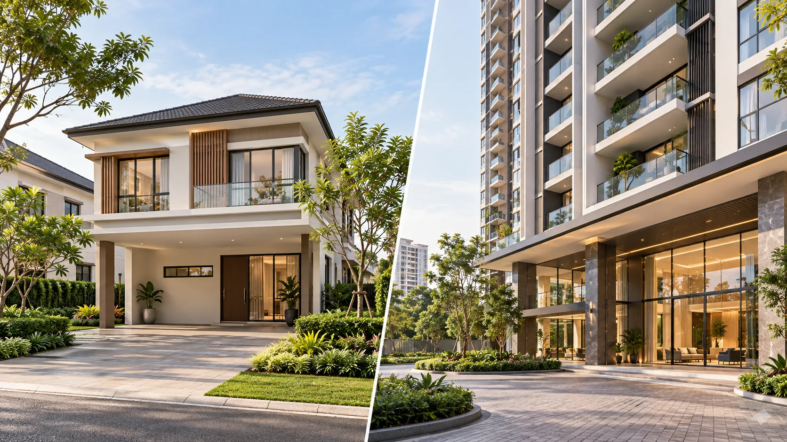
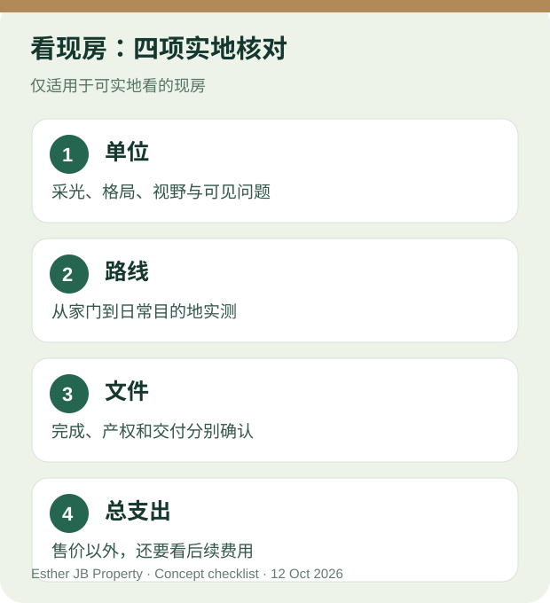

新山买家指南 · 资料核对: 2026 年 10 月 12 日
在新山找现房或接近交付的新盘，怎样选？
如果你希望较快安排入住，可以把选择分成两类：已建成、能安排看具体单位的现房，以及发展商表示接近交付、仍须核对进度的新盘。现房可能是已竣工的新单位，也可能是二手房；接近交付的新盘则不应被写成已经可拿钥匙。两类房源的合约、可看范围和交付条件都可能不同。无论你想找 Austin、CIQ，或新山其他地区，先讲清楚你需要哪一种阶段，比只说“我要快一点入住”更有用。国家房屋局买家提示

原创概念图，仅帮助说明两种房型；不是任何项目的实景、实际单位或交付承诺。

生活情境示意：无论是家庭、情侣或独立买家，都可以先从自己的入住时间和日常需要出发；人物与室内场景不代表实际房源。
可实地看的现房：四个实际好处
以下四点适用于已经能够看具体单位的房子；若仍未交付或不允许进入实际单位，就要按下一节的方法核对，不能把这些优点直接套用。
1. 看的是具体单位，不只看样板间
你可以站在真正考虑购买的单位里，看看窗外视野、采光、通风、厨房动线和房间大小。早晚或下雨天的感受也可能不同；能安排的话，换一个时段再看。拍照记录单位编号与所见情况，之后才能与正式资料对照。
有地住宅要特别看屋顶、墙面渗水迹象、排水、停车位与邻近道路；服务式公寓则要看单位方向、电梯等候、走廊、停车动线和已开放的设施。能看见，不代表没有隐蔽问题；疑点应请合适的专业人士检查。
2. 周围生活较容易实测
已建成的房子通常让你更容易走一遍真实路线：从家门到车位、主要道路、常去的商店或工作地点。服务式公寓可以观察已开放的公共空间和管理情况；有地住宅可以看看街道、邻里停车与排水。观察只能说明看房当下的情况，不保证未来交通、管理或邻居状态不变。
3. 较容易把入住时间问清楚
与只看规划图相比，已建成单位让你更早核对工程完成与交付资料。不过，“完成建筑”“取得 CCC”“可交付空置单位（VP）”和“完成买卖手续后拿钥匙”是不同环节。向卖方或发展商索取适用文件，并请律师按该房的交易方式说明预计时间；不要把销售口头说的“马上入住”当作保证。KPKT 关于已建成住宅的资料特别区分了 CCC 与 VP。KPKT 已建成住宅与交付说明
4. 比较总支出时，问题更具体
你可以拿正在看的那一套房子，核对售价、需要维修或装修的地方，以及每月持续开支。服务式公寓别漏掉管理费、维修基金、停车及所用服务；KPKT 的分层管理手册解释了管理费与维修基金分别支持日常管理和较大的共同设施支出，但具体金额须看该项目资料。KPKT 分层管理手册
有地住宅则把建筑维修、排水、屋顶和日常交通也列入预算。任何房型都不要只比较广告价或银行初步估算；实际融资条件由银行按个案决定。

原创看房清单。它是提问工具，不是房屋质量认证。
接近交付的新盘，可以怎样看？
这类选择适合愿意等交付、又想趁现在比较户型和地区的人。**“即将交付”是待核实的进度描述，不等于 CCC 已取得、VP 已发出，也不保证某天拿钥匙。**若实际单位还不能进入，就明确记录目前看的是样板间、户型图还是施工现场可见部分，不把概念图当成完工实景。
向发展商或销售方索取项目名称、适用的广告与销售准证、买卖协议、书面预计完成／交付资料，以及任何最新正式进度。国家房屋局的买家提示把发展商许可、广告销售准证、土地状态、宣传资料和预计完成日期列为应核对资料。签约及交付细节请律师按具体项目说明。国家房屋局买家提示
有地住宅，还是服务式公寓？

生活情境示意，并非实际在售单位或买家照片。
**想要更独立的空间、院子或停车安排？**可以先看有地住宅，但要亲自检查建筑与土地资料，并考虑维护工作。JKPTG 提醒，产权上的限制、私人禁令或抵押等事项可能影响转让，应按正式产权资料核对；具体交易由律师处理。JKPTG 土地业主指南
**想要较集中管理的生活方式？**可以先看服务式公寓，但不要只看大厅和泳池。问清实际单位、分层产权／土地用途文件、管理费、维修基金、停车、设施开放情况，以及适用的使用条件。不同项目的产权、费用和融资安排可能不同，不能只凭“service apartment”名称推断。
最实用的做法，是先选地区与交付阶段，再比较房型。Austin 与 CIQ 的生活路线不同；这里把它们作为两个找房入口，不声称某区的现房一定有货或一定更适合你。比较已建成单位时，使用实际单位资料；比较接近交付的新盘时，把未能亲眼核对的部分另列出来。
想找 Austin、CIQ 的现房或接近交付的新盘？
告诉 Esther 预算范围、想看的地区（Austin／CIQ／其他）、偏好有地住宅还是服务式公寓、希望看现房还是接近交付的新盘，以及预计何时入住。我会按当时可核实的资料整理选择；能否看具体单位、预计交付或预约看房，再分别确认。这里暂不列项目名或价格，因为房源状态与售价要以当时正式资料为准。
请 Esther 帮我找符合需求的 JB 房源
带着条件联系 Esther
延伸阅读：认识 Esther · 第一次看新楼盘先问什么？ · 配套现房五问
来源与更新
资料核对：2026 年 10 月 12 日。Austin 与 CIQ 只是找房地区入口，本文未核实或推荐具体项目。看房建议属于 Esther 的实用检查方法；本文不代表任何具体单位已通过检查，也不保证交房时间、贷款、售价或投资回报。个案应依合同、正式文件与专业核查。